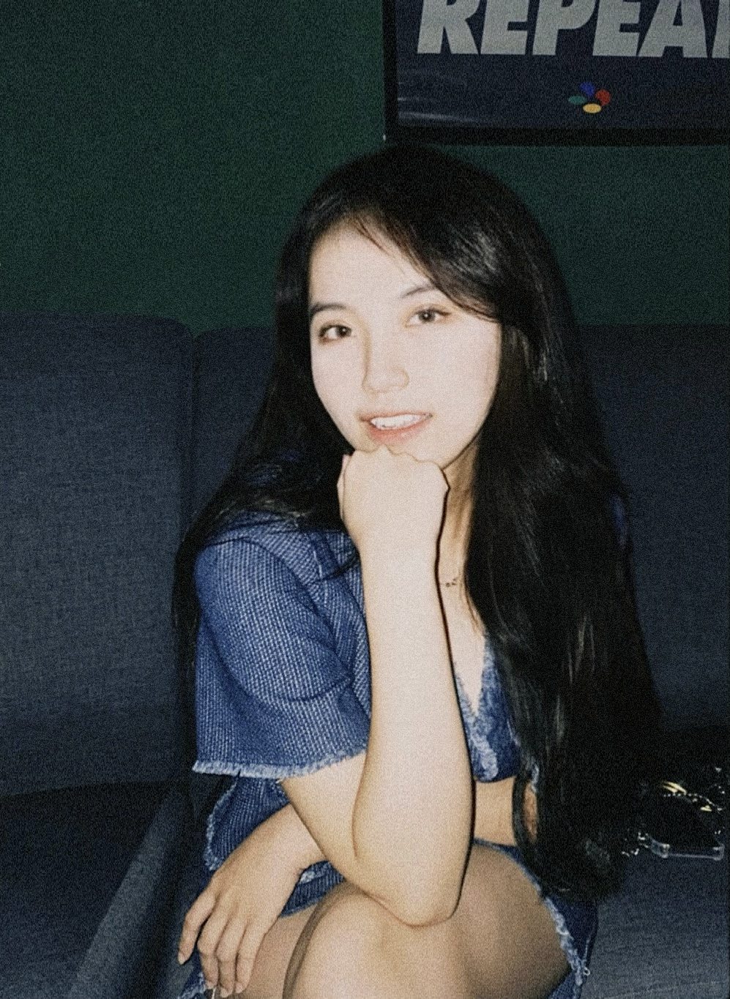

<!DOCTYPE html>
<html>

<head>
    <title>Porfile</title>
    <link rel="stylesheet" href="portfolio.css">
</head>

<style>
    .flex-container {
        display: flex;
        justify-content: space-between;
        align-items: center;
        background-color: #a0c9f3;
    }

    .logo-group {
        display: flex;
        gap: 20px;
    }

    .footer-content {
        text-align: center;
        background-color: #466a93;
        color: whitesmoke;
    }
</style>

<body>
    <header>
        <div class="flex-container">
            

            <div class="logo-group">
                <a href="https://wa.link/6fjt65" target="_blank">
                    
                </a>

                <a href="https://www.instagram.com/kikikeqi__/" target="_blank">
                    
                </a>

                <a href="https://github.com/kikikeqi" target="_blank">
                    
                </a>
            </div>
        </div>
    </header>


    <div class="footer-content">
        
        <h1>CHAI KE QI</h1>
        <h2>Web Publishing</h2>
        <p>My name is Chai Ke Qi, nickname is Kiki and I am 18 years old. I was born and raised in Johor, Segamat.
            Currently,I am a student at Dasein Academy of Art majoring in Digital Media. I have a great passion for
            design,photography,makeup, beauty, singing and watching dramas. In my free time, I enjoy watching
            dramas,creating digital art.
        </p>
    </div>


</body>

</html>